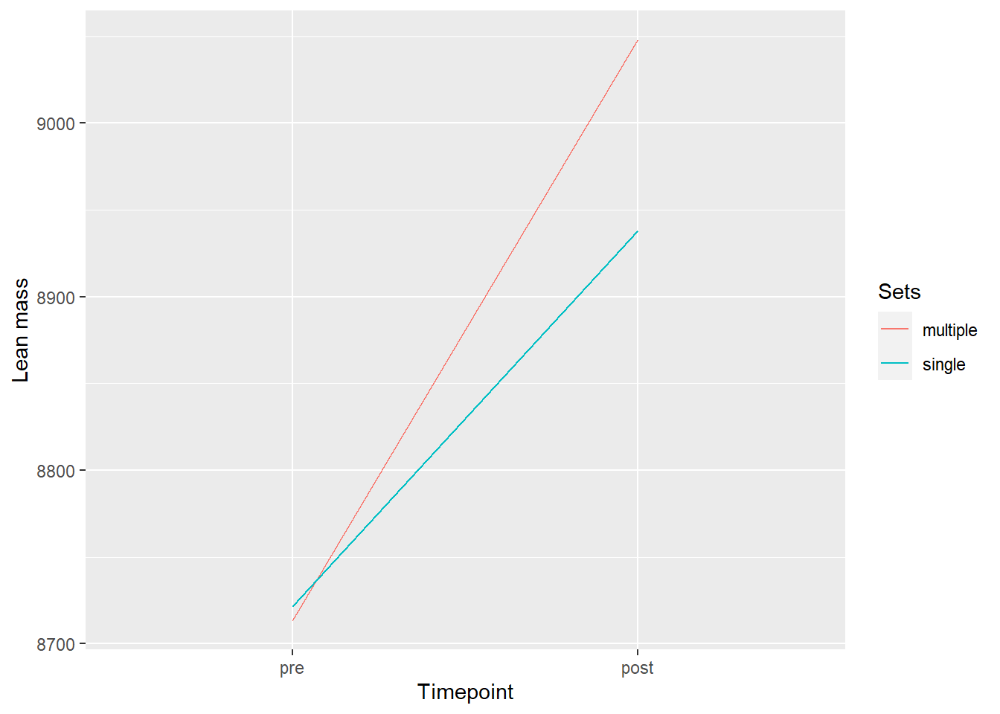
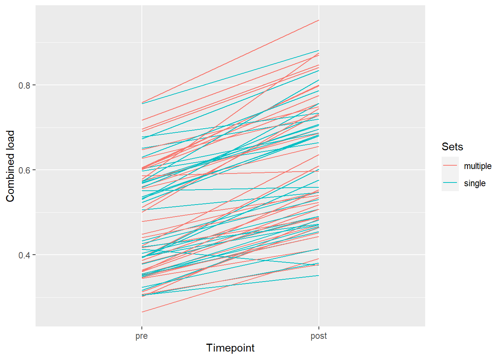

Assignment 5: Analyzing repeated measures experiments
Introduction
Resistance training is important for general health and increases strength and skeletal muscle size, when done over a longer period of time. There are different variables and factors that influence the effect of resistance training and individuals have different responses to resistance training and its volume (Ahtiainen et al. 2016).
Several studies on resistance training have investigated how factors like number of sets and repetitions influence body composition and muscle strength differently. Schoenfeld et al. (2017) looked at the effect of number of weekly sets on muscle size. The number of weekly sets had a significant effect on muscle size changes (p=.002). In another study Rønnestad et al. (2007) compared the effects of resistance training volume on strength gains in untrained men. Participants were randomly split up into two groups, one group trained 3 sets in all the leg exercises and 1 set in the upper body exercises (3L-1UB) while the other group trained 1 set in leg exercises and 3 sets in upper body exercises (1L-3UB). After 11 weeks of training the 3L-1UB group (41%) improved their 1RM in the leg exercises significantly more (p<.001) than the 1L-3UB group (21%). There were no group-differences in the upper body exercises. McBride et al. (2003) designed a study to compare the effects of single (1 set) versus multiple (6 sets) set resistance training on strength and body composition in untrained men. After the 12 week intervention (leg press and bicep curl) both groups had improved their percentage strength significantly, with the multiple set group showing an even better increase in the bicep curl than the single set group. No significant differences between the groups were found regarding body composition. Rhea et al. (n.d.) also looked at strength gain after following either a single or multiple set resistance training program and found that training 3 sets gave a statistically significant increase in the 1RM in the leg press.
Contrary to those findings is the conclusion of Carpinelli (1998), who says that performing single or multiple set resistance training for a training period of 4 to 25 weeks does not result in significant difference in strength increase.
With the background of those findings the goal of this study was to determine if there is a significant change in lean mass and maximal strength with different resistance training volumes, in this case one set vs. three sets.
Methods
Study overview and participants
The participants (n = 41) were between 18 and 40 years old and had to be non-smokers. Other exclusion factors are listed in Table 1.
XXXX more
| Col1 | Col2 |
|---|---|
| hello | hello |
| hello | hello |
| hello | hello |
| hello | hello |
| hello | hello |
Intervention
The 12 week long intervention consisted of 2-3 full-body resistance training sessions per week. Participants performed the leg exercises unilaterally and trained with different training volumes on each leg. This was done to see possible differences in the effect of resistance training volumes. It was chosen randomly which leg performed one set (single set) or three sets (multiple sets). Body composition and muscle strength was tested at baseline and after the training intervention. There were additional muscle strength assessments after 3, 5 and 9 weeks of training.
Training protocol
The warm-up was a standardized routine which all participants followed before getting started with the training sessions. Participants started with 5 minutes of cycling on the ergometer at 12-14 RPE (rating of perceived exertion). After that they performed 10 repetitions of all of the body weight exercises (push-ups, sit-ups, back extensions, squats). The last part of the warm-up consisted of one set of each of the restistance exercises with 10 repetitions at around 50% of 1RM (repetition maximum).
Participants followed this order while performing the resistance exercises: unilateral leg press, leg curl, knee extenstion. The exercises were performed as either a single set or multiple sets. The single sets were done in between the second and third set of the multiple set side. The lower body exercises were followed by two sets of bilateral bench press, pull down and either shoulder press or seated rowing - those two exercises were alternated from session to session. The participants had between 90 to 180 seconds of set-rest. As far as training intensity goes the intervention started out the first two weeks with 10RM, increased gradually up to 8RM the following 3 weeks and ended at 7RM during the last 7 weeks. Some of the training sessions were performed without supervision, where participants were asked to keep detailed logs. An average of 91% sessions were supervised.
Maximal strength assessment
The maximal strength was measured as a 1RM in the unilateral leg press and knee extension. Participants performed a specific warm-up before each exercise which consisted of 10, 6 and 3 repetitions at 50, 75 and 85% of the predicted maximum. The 1RM was then assessed by increasing the weight until it could not be lifted any longer. The 1RM for each exercise was the highest restistance a participant could successfully lift with full range of motion. Participants got four to six tries.
Body composition (DXA)
Dual-energy X-ray absorptiometry (DXA) was used to test each participant’s body composition before and after the intervention. A standard protocol was followed and participants had to fast the 2 hours before the test as well as not do any intense physical activity 48 hours prior to the scan.
Data analysis and statistics
The statistical analysis was performed using R-studio (Version 4.2.2).
XXXX more
Results
Body composition - lean mass
The results of this study show a significant change of 3.32% (± 4.39) in the lean mass of the multiple sets leg compared to the single set leg, which had a change of 2.04% (± 3.71) after 12 weeks of resistance training (p<.001).
Maximal strength
The results of this study show a significant improvement of 31% (± 14.2) in the maximal strength of the multiple sets leg compared to the single set leg, which had a change of 24.5% (± 12.9) after 12 weeks of resistance training (p<.001).

Discussion
Die Ergebnisse dieser Studie zeigen, dass 2-3x wöchentliches Krafttraining mit single set und multiple set zu einer Verbesserung der Maximalkraft und lean mass führen, wobei die Verbesserung mit dem multiple set Protokoll größer waren. Das stimmt mit früheren Studien überein.
Herausforderung: DXA Genauigkeit
XXXX more
References
Ahtiainen, Juha P., Simon Walker, Heikki Peltonen, Jarkko Holviala, Elina Sillanpää, Laura Karavirta, Janne Sallinen, et al. 2016. “Heterogeneity in resistance training-induced muscle strength and mass responses in men and women of different ages.” Age (Dordrecht, Netherlands) 38 (1): 10. https://doi.org/10.1007/s11357-015-9870-1.
Carpinelli, Ralph N., and Robert M. Otto. 1998. “Strength Training: Single Versus Multiple Sets.” Sports Medicine 26 (2): 73–84. https://doi.org/10.2165/00007256-199826020-00002.
McBride, Jeffrey M., John B. Blaak, and Travis Triplett-McBride. 2003. “Effect of Resistance Exercise Volume and Complexity on EMG, Strength, and Regional Body Composition.” European Journal of Applied Physiology 90 (5-6): 626–32. https://doi.org/10.1007/s00421-003-0930-3.
Rhea, Matthew R, Brent A Alvar, Stephen D Ball, and Lee N Burkett. n.d. “Three Sets of Weight Training Superior to 1 Set With Equal Intensity for Eliciting Strength,” 5.
Rønnestad, Bent R., Wilhelm Egeland, Nils H. Kvamme, Per E. Refsnes, Fawzi Kadi, and Truls Raastad. 2007. “DISSIMILAR EFFECTS OF ONE- AND THREE-SET STRENGTH TRAINING ON STRENGTH AND MUSCLE MASS GAINS IN UPPER AND LOWER BODY IN UNTRAINED SUBJECTS:” Journal of Strength and Conditioning Research 21 (1): 157–63. https://doi.org/10.1519/00124278-200702000-00028.
Schoenfeld, Brad J., Dan Ogborn, and James W. Krieger. 2017. “Dose-Response Relationship Between Weekly Resistance Training Volume and Increases in Muscle Mass: A Systematic Review and Meta-Analysis.” Journal of Sports Sciences 35 (11): 1073–82. https://doi.org/10.1080/02640414.2016.1210197.